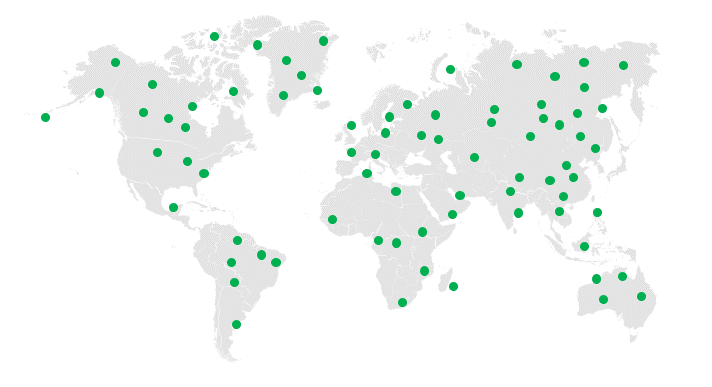
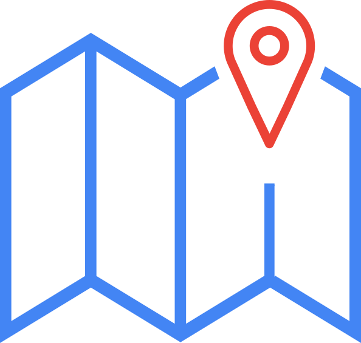
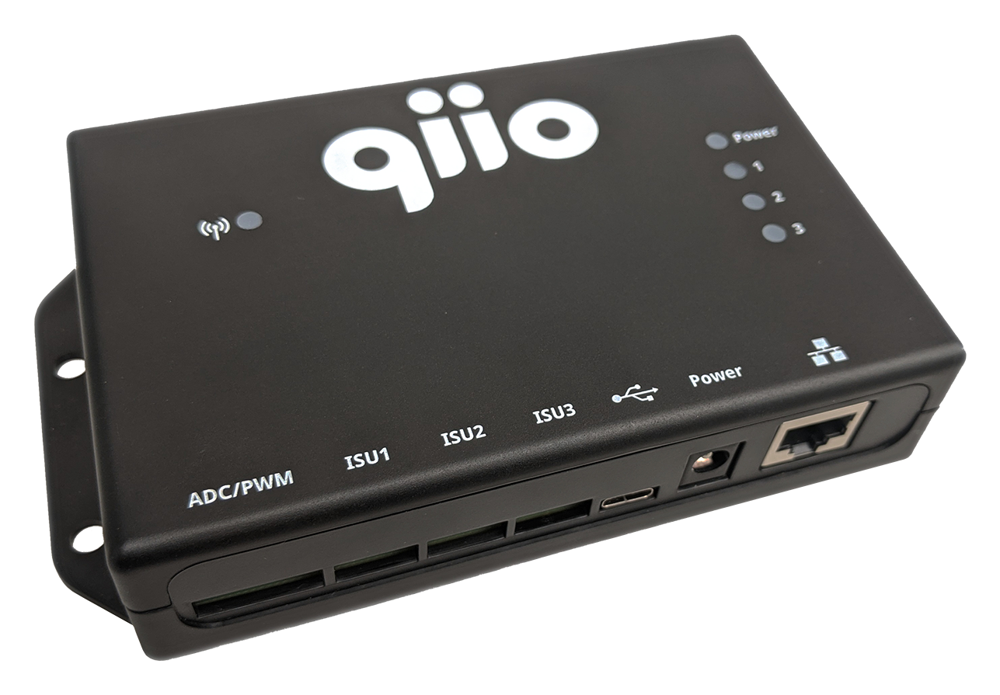
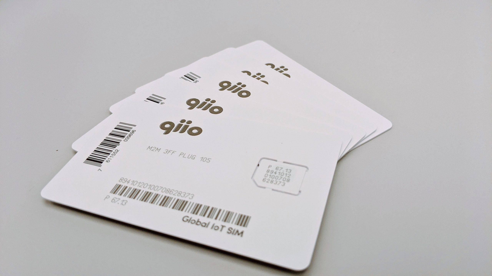

Smart Connectivity is qiio’s way of ensuring your IoT solution is
scalable.
Right out of the box,
qiio solutions are able to connect a multitude of assets anywhere in the world. This typically can
save 20-30% in costs and reduce failure rates by 90%. qiio customers enjoy stress-free connectivity
enabling them to focus on the real value of their IoT project.
Smart Connectivity is a combination of hardware, software and connectivity services (qiio Sphere
Studio®) that allow real insight and robustness for the first time in IoT. The amalgamation of
cellular data from the edge and the cloud combined allows control and reliability. This is made
possible in the physical world with the most secure cellular IoT devices, expertly manufactured in
Switzerland and Germany.
Smart Connectivity by qiio is not a 3rd party cloud system – our solution complements your existing
cloud infrastructure!

qiio has designed a set of unique tools that enable you to deploy your IoT solution anywhere without stress. Our tools are a combination of automated cloud, unique firmware and scalable connectivity. See these tools firsthand and order your Starter Kit.
A live scan of all available cellular networks from all available operators where smart analysis is made to choose the best cellular connection for that particular device, location and moment. Device will run an emergency survey if quality drops. Otherwise, it runs at regular intervals.
The combination of edge and backend cellular data to appropriately diagnose and
resolve cellular connectivity issues.
Connectivity Triages resolves issues to reduce expensive support bills and increase the reliability
of IoT solutions.
Secondary operators available globally for back-up cellular connectivity.
With Connectivity Insurance you always have an operator to expand your IoT coverage area.

Indoor and outdoor location available through GNSS (GPS) cellular triangulation
and WIFI scanning.
With Connectivity Location you will know where your devices are indoors or outdoors.

qiio SIM with connectivity everyhwere

qiio Extended Warranty, securing device health as an optional support service